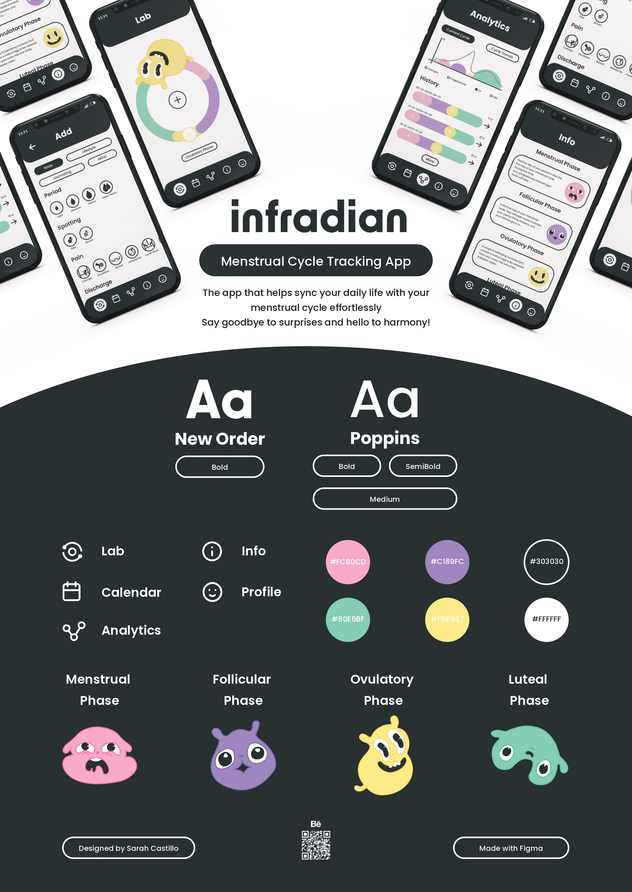
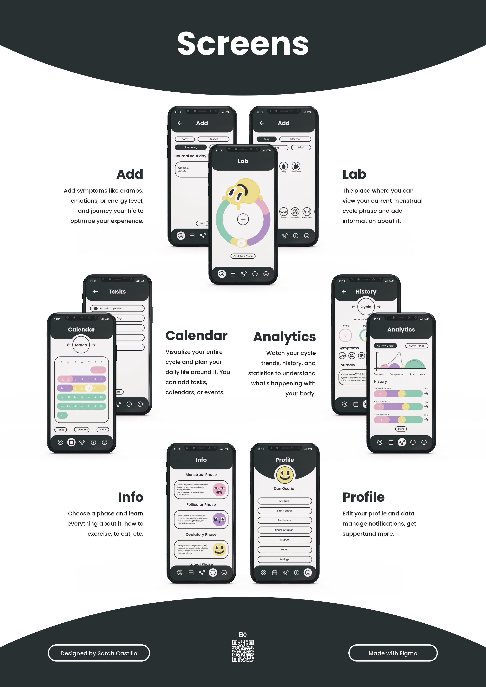

Concept
This menstrual tracking app is designed with a focus on cycle syncing and the infradian rhythm of menstruating bodies, ensuring inclusivity for all gender identities through its neutral approach. Key features of the app include:
- Lab: A section where users can log symptoms and other relevant information about their cycle.
- Calendar: Allows users to view the different stages of their cycle clearly and add tasks, events, and schedules.
- Analytics: Provides detailed statistics related to the period, offering valuable insights into menstrual health.
- Info: An educational section where users can learn about each phase of the menstrual cycle.
- Profile: Enables users to edit important aspects of their account to personalize their experience.
The app features unique characters representing each phase of the menstrual cycle, making it easier to distribute and understand the information. This thoughtful design ensures a comprehensive and user-friendly experience for managing menstrual health.
Softwares
Adobe Illustrator and Figma.

